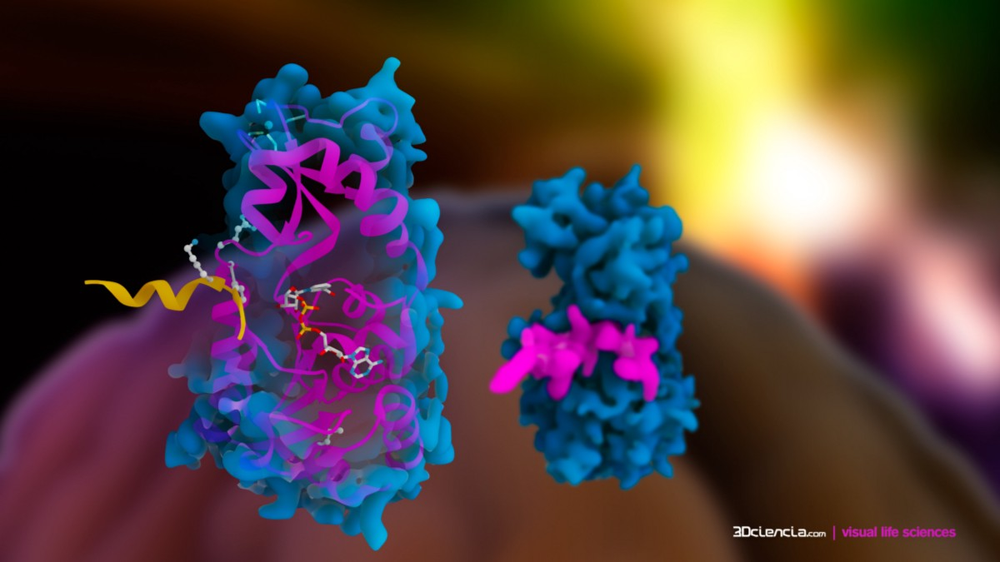

LEE ESTE TEXTO O MUERE...
Hoy...
Tienes un 95 por ciento de posibilidades de morir eventualmente a causa de una enfermedad...

De la cual ya existe una cura conocida en un lugar poco conocido del planeta…
Como la obesidad…
Despues de 6 mil años de la historia de la humanidad, finalmente…
Podemos afirmar que…
“Científicos encontraron la cura para la obesidad…”
Este descubrimiento podría haberse hecho público hace al menos 15años...
Pero la industria de la pérdida de peso no quiere que lo sepas...
Por eso...
Este descubrimiento se mantuvo en secreto durante años...
Siendo revelado solo a mis pacientes en mi escritorio...
Para la industria de la pérdida de peso…
Saber este descubrimiento les sacará mucho dinero del bolsillo…
Ya no tendrás que pagar consultas carísimas…
Pagar el gimnasio…
Y hacer dietas restrictivas donde comes solo pollo y ensalada…
Con este increíble descubrimiento que los científicos están llamando de…
"El mayor descubrimiento de pérdida de peso del siglo 21..."
Cientos de mujeres hoy en día viven sus vidas sintiéndose bien con sus cuerpos...
Pueden usar ropa que antes no podían...
Se miran en el espejo y están contentas con lo que ven...
No hace falta ir a gimnasios, hacer dietas ni nada por el estilo…
Con solo este descubrimiento…
Hoy amanecen con ánimo y felices…
No se cansan con una simple caminata...
Eliminado cualquier enfermedad relacionada con la obesidad...
Como por ejemplo…
Enfermedades cardíacas…
Diabetes…
Hipertensión…
Mi nombre es Doctor Andrés…
Y en unos segundos...
Te mostraré cómo perder de 8 a 15 kg en los próximos 28 días…
Estoy seguro que tu nunca viste nada parecido…
en toda tu vida…
Y probablemente esté muy lejos de lo que podrías imaginar...
Es algo que finalmente ha resucitado la autoestima de 2.595 pacientes mías...
En los últimos 6 meses…
Quienes estaban con la vida destrozada...
debido a su enorme exceso de peso...
Mujeres que antes de eso…
Habían desarrollado depresión por…
una inmensa insatisfacción con su cuerpo…
Y finalmente fueron curadas…
Sus familiares se sorprendieron…
de cómo sus cuerpos habían cambiado del agua al vino… en tan poco tiempo…
Después de todo, la situación de estas mujeres aparentemente
era...
“sin esperanzas”...
Y si prestas atención…
en lo que estoy a punto de revelarte ahora mismo...
Y sigues mis instrucciones cuidadosamente…
Podrás reprogramar tu metabolismo…
para quemar toda la grasa no deseada…
que se almacena en tu cuerpo...
Iniciando una…
Quema de Grasa Ardiente!
Eso hará que la piel de tu vientre sea cada vez más delgada...
Te permitirá experimentar el sabor…
de mirarte al espejo y no preocuparte con lo que ves…
sintiéndote satisfecha…
con tu propio cuerpo...
Sentirás lo que es despertar cada día...
exhalando una nueva autoestima…
que ni siquiera las personas que son 20 años…
mas joven que tu, se sienten así al mirarse al espejo…
Tus días comenzarán llenos de...
energia, disposición e ideas...
Tu cuerpo se desinflará...
y tu salud volverá a la normalidad, como era antes…
Y tal vez dentro de poco la gente empiece a decirte…
que pareces ser...
10 años mas joven…
Todo esto utilizando este increíble descubrimiento…
comprobado incluso por las mejores investigaciones de Europa y del mundo.
que realmente obliga tu cuerpo…
a devorar tu grasa desagradable…
Incluso si tienes un metabolismo lento…
Una genética horríble…
y antecedentes familiares de aumento de peso...
Incluso si no tienes tiempo para nada…
Aún así podrás disfrutar de esos benefícios…
porque el único esfuerzo que tendrás que hacer…
será el de caminar tranquilamente…
hasta el refrigerador…
Incluso si has estado aumentando de peso día tras día durante años...
Y estás con 100 kilos de sobrepeso...
No importa…
Incluso si todavía quieres continuar...
comiendo tus dulces favoritos...
no tendrás que dejar de comerlos…
E incluso si nunca lograste perder peso…
con ninguna dieta anterior…
o con cualquier cosa que hayas intentado antes...
y te lo digo una vez más…
No importa...
Y te puedo asegurar que la culpa de tus fracasos pasados no fue tuya...
Vea...
este simple truco que les trajo de vuelta...
La vida normal de más de 2 mil pacientes míos…
Lo mantuvieron oculto las industrias y los grandes empresarios…
Para que puedan seguir vendiendo medicamentos para bajar de peso y alimentos lights...
La verdad es que ellos no quieren que sepas…
lo que estoy a punto de revelarte en los próximos segundos…
Después de todo…
si descubres esto...
podrás mantenerte en forma por el resto de tu vida...
sin dificultades...
Y pronto las industrias no tendrán a quién venderle los productos....
que las deja cada vez más ricas...
Así que por favor no pierdas la esperanza...
Sólo sepa…
que eso no fue tu culpa...
Muchas de mis pacientes tuvieron que llegar al fondo del pozo...
antes de descubrir este sistema...
PODEROSO...
no fue fácil…
haría que cualquiera se rindiera fácilmente...
Pero al final…
tudo fue gratificante…
porque eso fue lo que revirtió el daño en sus cuerpos...
Fue lo que cambió sus vidas...
Volvieron a tener la salud y disposición…
de cuando eran jovenes…
Y es lo que va a cambiar tu vida también…
Y claro…
Va a mantener tu corazón fuerte y saludable…
dejándote lejos de cualquier tipo de fatalidad…
causada por la obesidad...
como un infarto de miocardio o un ACV por ejemplo…
Lo que voy a compartir aquí es totalmente seguro...
Y va en contra de todo lo que has visto y oído sobre la pérdida de peso rápida...
Y te garantizo una cosa...
una vez que aprendas este secreto...
nunca más tendrás sobrepeso…
Confia en mi…
"Dr. André, me caso en unas semanas...
pero no me siento bien con mi cuerpo”…
Raquel me dijo con tristeza en los ojos…
Ela me dijo que estaba con mucha vergüenza de subir al altar…
y que todos vean que estaba con sobrepeso…
Su tan soñada boda estaba a punto de ocurrir...
pero no de la manera que ella esperaba...
Su insatisfacción con su propio cuerpo...
fue detonando la relación con su futuro esposo…
poco a poco...
Raquel me dijo que en el pasado era feliz con su cuerpo…
Ella podía salir a fiestas con vestidos cortos…
Y en biquini...
Pero...
Desde que dió a luz a sus gemelos…
se ha activado un interruptor…
y todo cambió drasticamente…
su felicidad con su cuerpo había desaparecido…
la acumulación de grasa que ganó a raíz del embarazo…
aumentaba día a día…
Y parecia que ese auento incontrolablel…
Se acumulaba en su estómago...
De repente, perder apenas…
1 kilo...
se convirtió en una batalla agotadora...

Raquel me dijo que le costaba respirar…
sintiendose cansada debido al peso de la grasa en su barriga…
tareas que eran tan simples en el pasado...
se convirtió en un verdadero sacrificio...
Un día Raquel vio un noticiero en la televisión…
Hablaba de un Dr que decía haber descubierto la cura para la obesidad…
Fue en ese momento que me conoció…
Durante semanas trató de llamarme a mi escritorio...
Pero después de que esa noticia salió a la luz...
No conseguía tener horario para atender a tanta gente...
Después de semanas insistiendo...
Finalmente, consiguió una cita con mi secretaria...
Ella vino a mi escritorio diciendo que quería suicidarse…
Y dejaría a su futuro esposo e hijos…
Esto fue causado por no soportar más el sobrepeso y necesitaba una solución urgente...
Raquel me dijo que hasta ese momento…
No tenía ni un centavo más para gastar en dietas...
Sus reservas se habían agotado...
Nada funcionaba...
nada podía eliminar la desagradable grasa de su cuerpo...
Todo lo que intentaba parecía hacer que su cuerpo se volviera más y más...
receptivo a la acumulación de grasa…
Como eso era posible?
Ningún profesional conseguia entender exactamente lo que estaba sucediendo…
Cada uno dijo algo diferente...
Y eso la confundió cada vez más...
Y con todo eso ella se sintió más y más…
deprimida y sin esperanza...
Solo tenía 3 opciones…
Podría ignorar todo y fingir que esta situación era normal...
y ver su vida, la de sus hijos y la de su futuro esposo desmoronarse día a día…
La segunda opción era enfadarse y quejarse de cuánto la vida estaba siendo “injusta”...
y lamentarse todos los días...
O podría tomar la decisión que tomó...
la de recuperar sus días felices…
Y descubrir la verdad sobre cómo mantenerse delgada todos los días…
logrando tener mucha autoestima incluso a cualquier edad...
sin excepciones.
Y cómo eliminar de una vez por todas la grasa inútil...
que la fastidiaba...
Después de que ella me contó toda su historia...
Miré a Raquel y le dije…
Tengo exactamente lo que buscas...
Con todos mis años de investigación y estudios…
Junto a grandes maestros en Europa…
Tenía exactamente lo que Raquel necesitaba para deshacerse...
de la grasa de una vez por todas.
Tengo acceso a la mejor información sobre…
cómo mantenerte en forma por el resto de tu vida...
Logré construir una carrera exitosa en toda Europa...
y terminé siendo conocido por ser el nutricionista...
que tiene la mayor colección de casos de éxito en el extranjero…
ah, y a propósito…
Terminé saliendo en algunos...
importantes noticiarios internacionales…
Apuesto a que has oído hablar de mí...
En ese momento…
Le presenté a Raquel...
Todos mis estudios...
que revelan cómo cualquier persona podría…
quemar toda la grasa no deseada...
solo comiendo pizzas...

y deliciosos brownies de chocolate por ejemplo…
Ella estaba impresionada...
Fueron horas de explicaciones...
hasta que revelé un secreto...
que cambiaría completamente...
el cuerpo de Raquel...
y te voy a contar ese secreto ahora…
Raquel...
le dije…
“Lo que voy a revelarte puede parecer un poco raro…
Pero toda tu acumulación de grasa está relacionada…
con la falta de un proceso natural simple llamado…
Cetosis...
que ocurre en el cuerpo...”
Luego expliqué en qué consiste este proceso natural…
llamado “Cetosis”…
La cetosis es un proceso natural que ocurre cuando la producción...
de energía para el organismo se hace a partir de la quema de grasas…
cuando no hay cantidad suficiente glucosa disponible en el cuerpo...
Transformando las células grasas blancas...
en fuente de energía...
Esto funciona como un mecanismo de supervivencia...
Y usted puede entrar en ese proceso…
simplemente eliminando los carbohidratos malos...
Cuando empiezas a preocuparte por los carbohidratos malos y no por las calorías...
surge la cetosis...
y luego, naturalmente, se produce una quema de grasa radical…
De ahí en adelante…
Cualquiera puede usar comidas deliciosas a su favor para obligar al cuerpo a quemar el suministro...
a través de la producción de enzimas…
simplemente manteniéndote saludable y delgada …
transformando así los kilos no deseados...
en una fuente de energía…
solo necesitas las comidas correctas y en una orden específica…
Le pasé todo lo que habia estudiado durante años …
Creé un cronograma de comidas de 28 días...
eso haría que Raquel volviera a ser delgada como antes…
Bueno, estas comidas en sí mismas son aparentemente “simples”…
Pero cuando se usa en un orden correcto y específico...
son capaces de disparar una...
quema de grasa ardiente en tu cuerpo…
Por primera vez en mucho tiempo...
Raquel me dijo que tenía esperanzas de volver al cuerpo que tenía antes…
Al principio ella dudó...
Que sería posible perder peso comiendo varios platos increíbles…
Pero ella me dijo que no tenía nada que perder…
Después de haber intentado diferentes formas de perder peso…
Ella decidió probar...
Y para su sorpresa...
poco menos de 15 días después...
Empezó a notar una diferencia...
Su buen humor lentamente comenzó a regresar…
Lo que sucedió a fin de mes…
fue un completo shock para ella…
Volvió a mi escritorio y me dijo...
"Doctor André, no lo vas a creer..."
Ella ya había perdido...
9 kilos...
Las lágrimas comenzaron a deslizarse por su rostro…
Ella no podía creer...
que había sucedido eso tan rápido…
Por primera vez en 2 años…
Finalmente empezó a sentirse bien con su cuerpo...
A finales del mes siguiente...
ella ya era una mujer completamente diferente…
con más de 17 quilos a menos…
Toda la grasa de su barriga prácticamente había desaparecido...
Tal como yo le había prometido...
Su rostro parecía 15 años más joven…
Y su cintura se volvió tan pequeña...
que necesitó tomarse un día entero…
para comprar ropa nueva...
Porque incluso la ropa que usaba a sus 20 años...
le quedaron grandes y holgadas alrededor de sus caderas…
Su energía estaba fuera de lo común…
Se despertaba en las mañanas totalmente renovada...
Su depresión finalmente se ha ido...
junto con la grasa.
Y ahora está como fecha marcada para su boda…
Pero fue solo el início de todo…
Sus amigos y familiares…
Cuando vieron que Raquel estava con un cuerpo de modelo…
se quedaron preguntando lo que Raquel había hecho para cambiar su cuerpo tan rápido así…
Entonces a partir de ahí las cosas quedaron fuera de control…
Todos quería tener acceso a esa alimentación secreta…
Su hermana Andresa fue la primera en experimentarlo…
Y ella dijo…
“Dr André, esto es FANTÁSTICO…
Ya perdi 8 kilos…
y el único “ejercicio” que tuve que hacer fue el de masticar…"
Entonces la madre de Raquel tampoco perdió el tiempo...
y comenzó a seguir el plan de alimentación...
Y lo que sucedió fue espetacular…
Su barriga desapareció…
Y ella alcanzó a perder 17kg a sus 59 añnos de edad…
Conforme el tiempo fue pasando…
gente de todas las edades y lugares comenzaron a enviarme mensajes implorando… para tener acceso a este secreto…
Y en poco tiempo empezamos a recibir decenas de testimonios…
todos los días, de todos los lugares de personas que dijeron...
haber usado las comidas secretas…
Mira cómo puedes cambiar tu vida como lo hizo Sabrina...